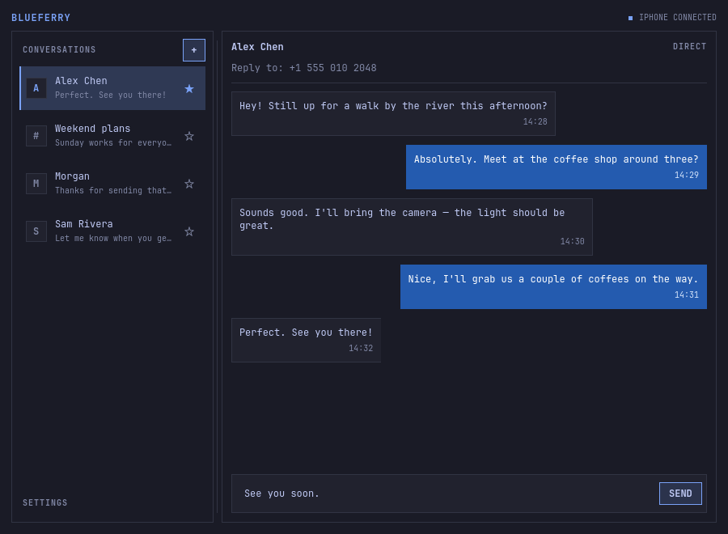

BlueFerry brings your iPhone’s messages to Linux over Bluetooth. Read and send iMessage, SMS, and RCS from a GTK, KDE, Quickshell, or terminal client.
Your computer talks directly to your phone using Bluetooth protocols that iOS supports natively. No proxy, iPhone app, jailbreak, or iCloud login is required.
Bluetooth support varies between adapters and iOS versions, and there are still some limitations.

Install
Download blueferry-backend and any clients you want to use.
The backend package includes the terminal client.
Download the 0.8.0 packages for Arch, Debian-based distributions, or Fedora.
Launch your client from the app menu, or run blueferry-tui in a terminal.
See the latest release, supported distributions, or build from source.
Pairing
- Keep your iPhone unlocked with Settings → Bluetooth open.
- Scan for the phone in BlueFerry, select Pair, and confirm the code on both devices.
- On the phone, tap ⓘ beside the computer. Enable Show Message Notifications and Sync Contacts, then wait for both connections in BlueFerry.
There are more details in the pairing guide. After setup, the backend starts automatically and reconnects after normal Bluetooth interruptions.
Omarchy plugin
The bar widget shows connection status and unread conversations, with a reply field under each one. Install the backend and Quickshell client first, then add the plugin:
omarchy plugin add https://github.com/erikwb/omarchy-blueferry.gitEnable it in Setup → Plugins and add it to your bar.
What to expect
- BlueFerry keeps messages it sees while connected. It does not download your iCloud Messages archive or provide complete sent-message history.
- Attachments, reactions, typing indicators, calls, and FaceTime are not supported.
- Group replies work when the participants can be identified safely. Some groups need a local member list confirmed in the app first.
- Optional iPhone system notifications depend on the local Bluetooth stack. Messages and contacts can work without that connection.
- Realtek Bluetooth cards generally do not support system notifications or group chats.